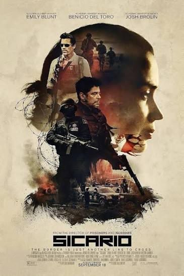

Kate Macer
Interpretada por Emily Blunt
Agente del FBI comprometida con la justicia y el cumplimiento de la ley. Representa el conflicto entre los ideales y la realidad de las operaciones especiales.

POLICIACO · THRILLER CRIMINAL
Una agente del FBI se integra a una operación especial contra el narcotráfico en la frontera entre México y Estados Unidos. Pronto descubrirá que la búsqueda de justicia puede llevarla a un mundo de violencia, secretos y decisiones moralmente complejas.
Sicario
2015
Denis Villeneuve
Taylor Sheridan
Estados Unidos
121 minutos
Crimen, drama y suspenso
Emily Blunt, Benicio del Toro y Josh Brolin
Roger Deakins
Jóhann Jóhannsson
Kate Macer es una agente del FBI que trabaja en operaciones contra el crimen organizado. Después de participar en un operativo relacionado con el narcotráfico, es invitada a formar parte de una misión especial dirigida por Matt Graver.
Durante la operación conoce a Alejandro, un hombre misterioso que desempeña un papel fundamental en la lucha contra los cárteles. A medida que avanza la misión, Kate descubre que los métodos utilizados por sus compañeros no siempre respetan los principios legales y éticos que ella defiende.
La película presenta una historia de tensión, violencia y conflictos morales en la que la protagonista debe enfrentar la diferencia entre hacer cumplir la ley y buscar resultados a cualquier costo.
Interpretada por Emily Blunt
Agente del FBI comprometida con la justicia y el cumplimiento de la ley. Representa el conflicto entre los ideales y la realidad de las operaciones especiales.
Interpretado por Benicio del Toro
Hombre reservado y enigmático que participa en la operación. Sus motivaciones personales y sus métodos generan tensión a lo largo de la historia.
Interpretado por Josh Brolin
Responsable de coordinar la misión especial. Es un personaje pragmático que prioriza los resultados de la operación.
Aunque Sicario es principalmente un thriller criminal, presenta elementos característicos del subgénero policiaco: agentes encargados de investigar delitos, operaciones contra organizaciones criminales y una búsqueda constante de información para enfrentar al narcotráfico.
Continúa con nuestra siguiente película del subgénero policiaco.